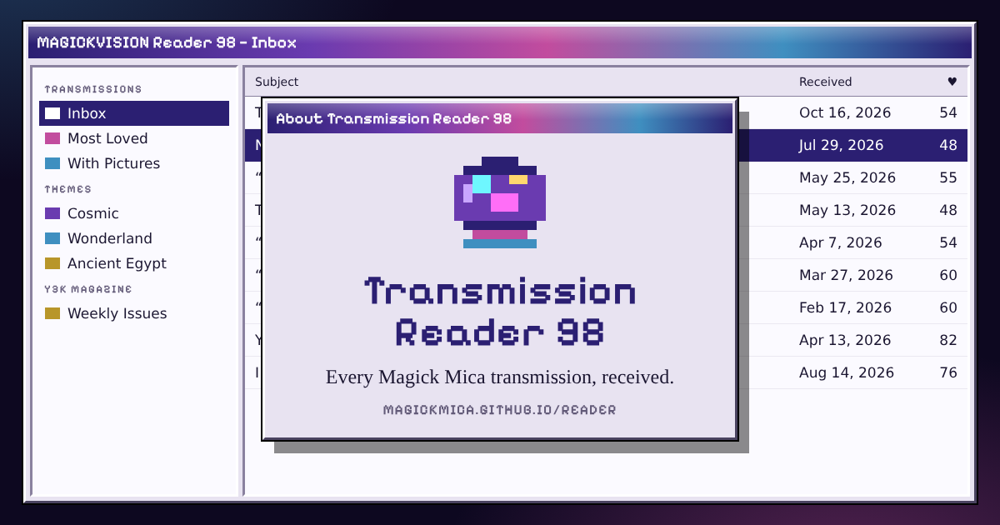

New Room 8 · Transmission Reader 98
Read every transmission like it’s 1998
The whole archive in a recovered late-90s mail reader. Pick a folder, sort by date or by love, and read each note in the preview pane.
- Every note
- Theme folders
- Y3K issues
- Sortable columns
